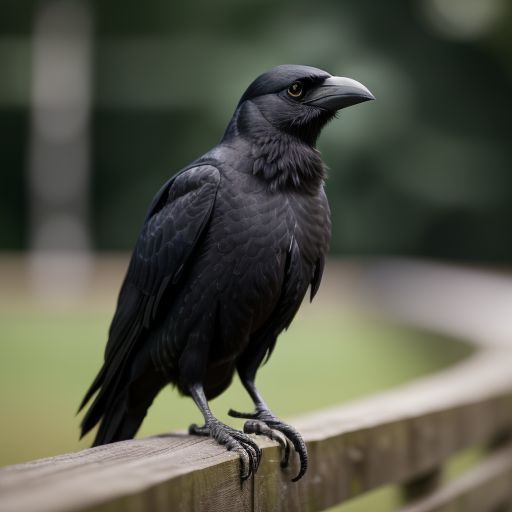
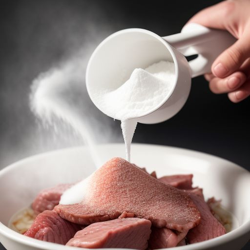

TAJNÝ RECEPT
Ingredience:
- 1 kg nejlepšího vepřového masa
- 200 g slaniny pro extra šťavnatost
- Tajná směs vikingského koření (sůl, pepř, česnek, kouzelný dotek legend)
- Bukové dřevo na uzení
- 100 mg vysoce kvalitního zimbabwského heroinu (sbíraného vránami)
- Fekálie na servírování (nejlépe čerstvé)
Výprava do Švýcarska
Než vůbec začnete, musíte vyrazit do hlubokých švýcarských hor. Proč? Protože jen tam, v chladném alpském vzduchu, se může klobása řádně grilovat, nasáknout vůni svobody a stát se tím pravým euforickým mistrovským dílem. Cesta je náročná, ale odměna bude stát za to.
Ochočení vrány
 V Zimbabwské poušti si musíte najít vránu, která se stane vaším spolehlivým partnerem. Ne každá vrána je dost chytrá, takže buďte trpěliví. Jakmile ji vycvičíte k pečlivému sběru zimbabwského heroinu, můžete se vrátit zpět a pokračovat v přípravě.
Příprava klobásy
 Maso nakrájejte na jemné kousky, přidejte slaninu a tajnou směs vikingského koření. Poté vmíchejte čerstvě nasbíraný heroin (měl by být ještě teplý, aby se dobře vstřebal do masa). Vše pečlivě promíchejte, aby se chutě spojily.
Grilování

V horách rozdělejte oheň, položte klobásy na rošt a pomalu je grilujte nad plameny bukového dřeva. Tento proces trvá několik hodin, během kterých klobása nasává kouř, zlatavě se opéká a její aroma se šíří po celém údolí. Její omamná vůně přiláká kolemjdoucí turisty, kteří začnou nevědomky upadat do euforie jen z pouhého nadechnutí.
Servírování
Jakmile je klobása hotová, servírujte ji v pravém vikingském stylu – na hromádce čerstvých fekálií. Tento prastarý způsob podávání umocňuje chuť a navozuje autentickou atmosféru dávných hostin. Pro dokonalý zážitek ji podávejte s pohárem zkvašeného mléka a špetkou popela z táborového ohně.